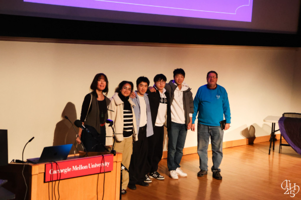

Projects
Instruments, interfaces, and tools for making and understanding sound.
-
Hand Music
3rd Place Overall, TartanHacks (~700 participants)

A gesture-controlled instrument that tracks both hands through a webcam. Users select scales and chords, play notes, and shape effects like volume, distortion, portamento, vibrato, panning, with intuitive gestures. Includes a real-time harmonization system for interactive performance.
Code on GitHub -
Emotion-Based MIDI Visualizer
An audiovisual piano visualizer, built from the idea that music has form and color. A neural network reads the player's facial emotion and drives the palette of the visuals. Three visual presets; accepts live MIDI input or MIDI files. Here is an early demonstration of the visualizer.
Code on GitHub